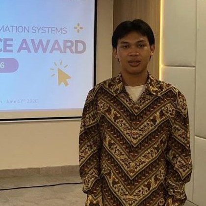
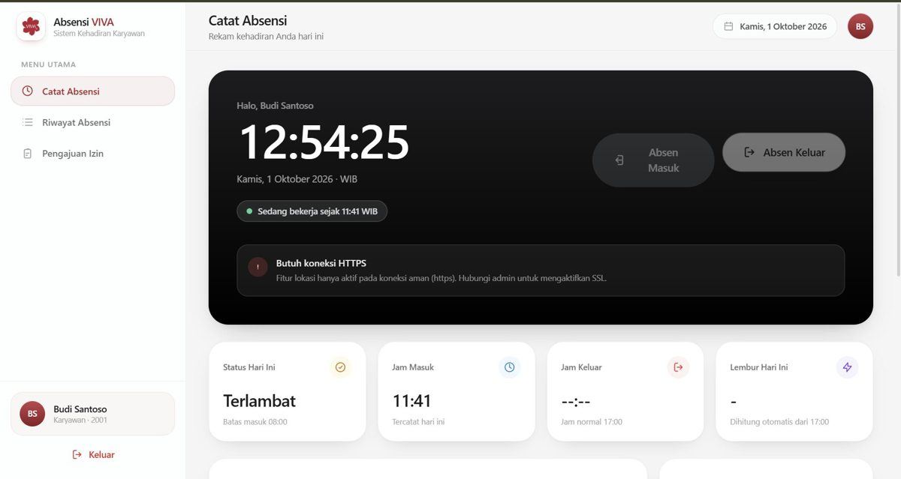
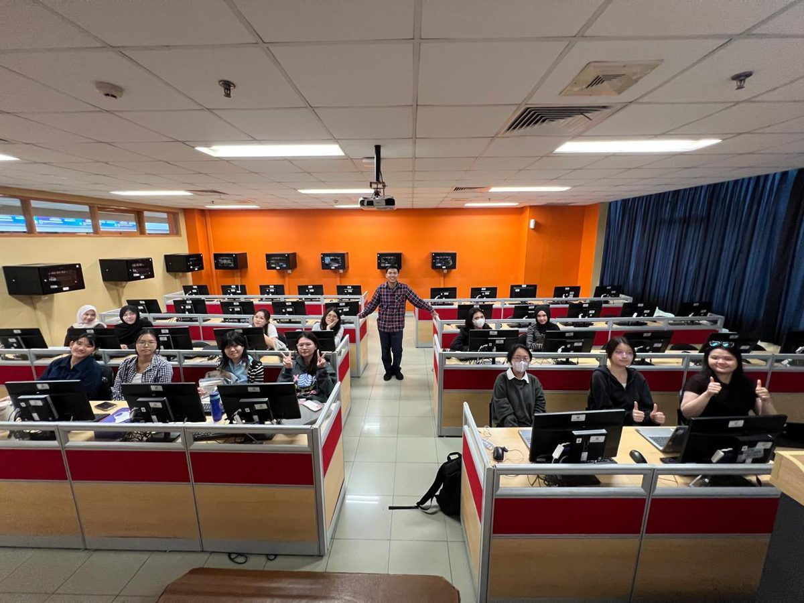
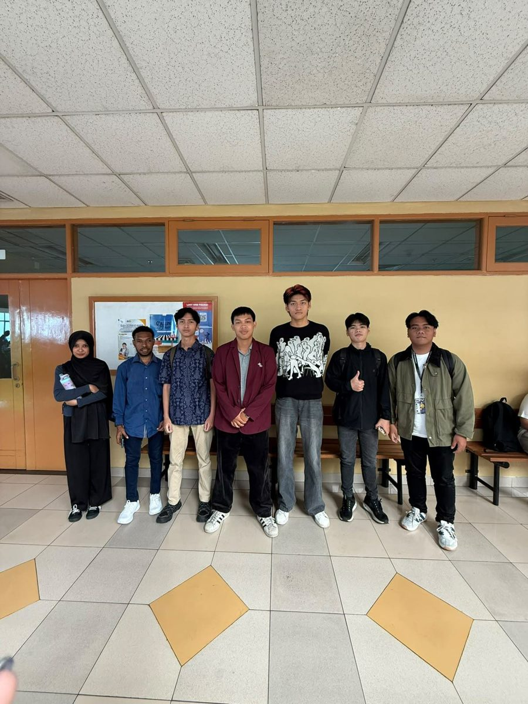

Web Development
Building responsive and dynamic websites using PHP, JavaScript, and modern front-end frameworks.
An Information Systems student at Bina Nusantara University passionate about Web Development, Database Systems, UI/UX Design and Cloud on AWS.

<>Building responsive and dynamic websites using PHP, JavaScript, and modern front-end frameworks.
Designing relational database schemas, optimizing SQL queries, and managing data with MySQL.
Crafting intuitive user interfaces, user flows, and interactive prototypes using Figma.
Understanding server basics, Linux environments, and deploying applications to the web.

DEPLOY_ID: ATTD-01A private commissioned web application engineered for an external client to manage intern check-ins securely. Features precise GPS location tracking and strict geofencing—requiring users to be physically validated inside the designated office coordinates before submission is authorized. Includes role-based management and tamper-proof logging.
 PROJECT_ID: TITU-UX
PROJECT_ID: TITU-UX
A UI/UX design competition project where I took primary responsibility for conducting in-depth user research and designing the core gamification mechanics. Translated commuter pain points into reward loops and interactive user journeys to boost daily public transit engagement.
Peran kepemimpinan dan bimbingan akademik di lingkungan kampus.

Mentored students in understanding core database management concepts. Guided practical sessions covering table normalization, relational schemas, and writing effective SQL queries.

Guided first-year students in campus orientation projects. Assisted them in adapting to university life, facilitating events, and building a supportive community environment for freshmen.